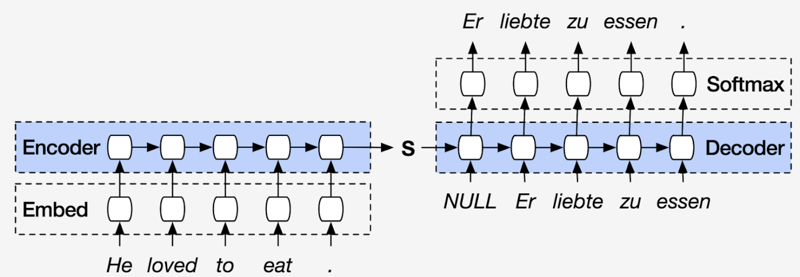
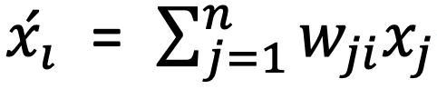
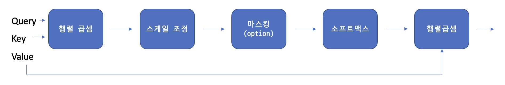
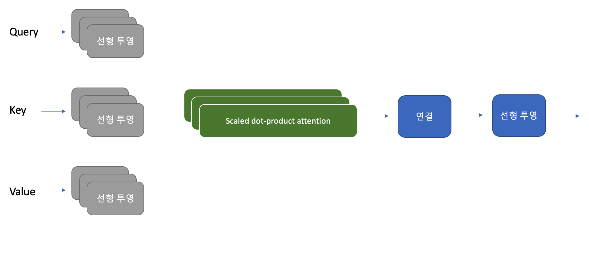
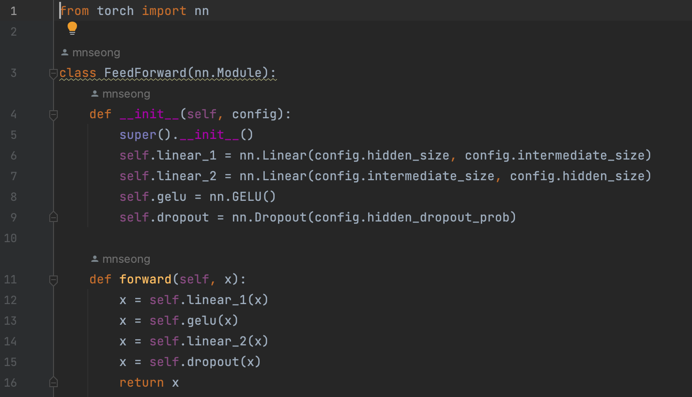
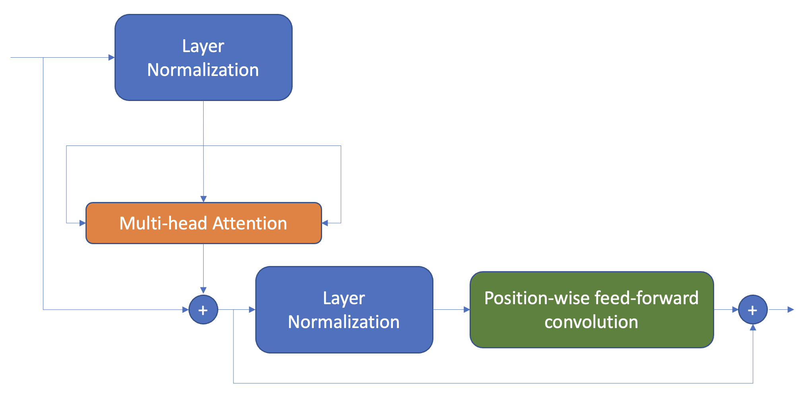
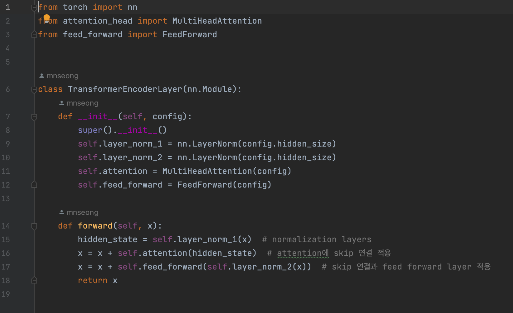
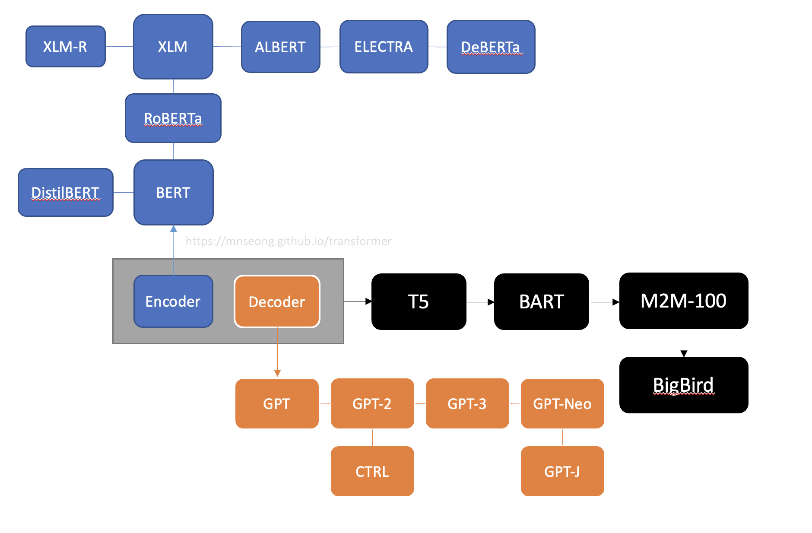

Transformer 는 지난 2017년 Google이 발표한 논문인 Attention is all you need 에서 나온 모델로 기존의 seq2seq의 구조인 encoder-decoder 구조를 기반으로 하면서도 전적으로 attention에만 의지하게 된다(self-attention). 순환을 모두 없애서 RNN을 사용하지 않고 encoder-decoder 구조를 설계했음에도 RNN보다 성능이 우수하여 최근 NLP분야에서 대단한 혁신을 일으키고 있다.
Encoder, decoder 구조는 단어의 sequence를 다른 언어로 번역하는 기계 번역 같은 작업에 널리 사용되며, 이 구조는 두 개의 구성 요소로 이루어진다.

Transformer의 encoder, decoder 구조를 깊게 이해하고 구현해보겠다.
Source Code
Encoder
Input token의 sequence를 hidden state 또는 context라 부르는 embedding vector의 sequence로 변환
각 encoder layer는 embedding sequence를 받아 다음과 같은 layer에 통과시킨다.
- Multi-head self-attention layer
- Fully connected feed-forward layer
Self-Attention
각 token에 대해 static embedding을 사용하는 대신, 전체 sequence를 사용하여 각 embedding의 가중평균(weighted average)을 계산하는 것

계수 w는 attention weight라 하며 ∑ w 값이 1 이 되도록 정규화 된다.
왜 token embedding의 가중평균을 구할까?
예를 들어 ‘flies’ 라는 단어를 떠올려보자. 파리를 뜻하는 명사 ‘fly’가 떠오를 수 있다. 하지만 시간은 쏜살같이 흐른다 라는 뜻으로 ‘time flies like an arrow 같은 문맥이 주어지면 날아간다는 뜻의 동사 ‘flies’를 쓰게 된다. 이처럼 모든 token embedding의 비율을 달리해 통합하면 문맥을 내포하는 ‘flies’ 표현이 만들어진다. 이 문장에서는 ‘time’과 ‘arrow’에 더 큰 가중치를 할당하게 될 것이다.(contextualized embedding)
Self attention layer를 구현하는 다양한 방법
-
Scaled dot-product attention
- 각 token embedding 을 query, key, value 세 개의 벡터로 투영한다.
- Attention score를 계산하고, similarity function을 삿용하여 query와 key가 얼마나 유사한지 계산한다. 이때 유사도 함수는 말그대로 내적이며 query와 key가 비슷하면 내적값이 크고, 겹치는 부분이 많이 없다면 내적값이 작아지게 된다. 이때 input token의 개수가 n이라면 nxn 크기의 attention score matrix가 생성된다.
- Attention weight를 계산한다. 내적 계산은 일반적으로 큰 수의 결과값이 나올 수 있으므로 훈련 과정이 불안정해질 수 있다. 따라서 먼저 attention score에 scaling factor를 곱해 분산을 정규화시킨뒤, softmax를 적용해 모든 column의 합이 1이 되게 한다. 이를 통해 만들어진 nxn matrix에는 attention weight, W_ij가 담긴다.
- Update token embedding. attention weight가 계산되게 되면, 이를 value vector(v1, v2 …)와 곱해서 embedding을 위해 업데이트 된 위 수식을 얻게된다.

전체적인 scaled dot-product attention 연산은 다음과 같이 수행하게 된다. -
Multi-head attention
한 head의 softmax가 유사도에서 한 측면에만 초점을 맞추는 경향이 있기 때문에 하나 이상의 attention layer를 사용하여 동시에 여러 측면에 초점을 맞추는 것이 성능에 도움이 된다. 예를 들어 한 head는 주어-동사 상호작용에 초점을 맞추고, 다른 head는 인접한 형용사를 찾는 경우이다. 이런 관계는 모델이 직접 데이터에서 학습한다. Computer vision의 CNN의 filter와 유사하다. 이미지에서 한 filter는 얼굴을 감지하고 다른 filter는 자동차를 찾는 경우를 생각하면 유사한 것을 알 수 있다. 다음 그림은 전체적인 multi-head attention의 구조를 보여준다.

Feed-forward layer
encoder와 decoder에 있는 feed forward layer는 간단한 두개의 층으로 구성된 완전 연결 신경망이다. 각 embedding을 독립적으로 처리하기 때문에 position-wise feed forward layer 라고도 한다. Vision 분야에서의 1차원 CNN과 유사하다. 보통 논문에서는 첫 번째 layer의 크기를 embedding의 4배로 하고, activate function으로 GELU를 가장 널리 사용한다. 다음은 feed forward layer를 구현한 code이다.

Layer Normalization
Batch에 있는 각 입력을 표준정규분포를 따르도록 정규화한다. (평균: 0, 분산: 1)
Transformer에서 layer normalization을 할때 주로 사용하는 방법은 두 가지이다.
-
사후 층 정규화
Transformer 논문에서 사용한 방법이다. Skip connection 사이에 layer normalization을 넣는다. 사후 층 정규화를 할 때, gradient 값이 발산하는 경우가 발생할 수 있는데 이것을 방지하기 위해, learning rate warm-up(학습률 웜업) 이라는 개념을 사용한다.
-
사전 층 정규화
다른 논문에서 많이 사용하는 방법이다. Skip connection 내부에 layer normalization을 넣는다. 보통 학습률 웜업이 필요하지 않으며 훨씬 안정적으로 훈련되는 경향이 있다.

다음의 코드는 사전 층 정규화 방식을 사용한 encoder layer이다.

Decoder
Decoder에는 두 개의 attention layer가 있다.
-
Masked Multihead self attention layer
Step 마다 이전의 output과 현재 token만 사용하여 token을 만든다. Mask matrix(대각선 아래는 1이고 대각선 위는 0인 하삼각행렬)을 사용하여 구현한다.
-
Encoder-Decoder attention lauyer
decoder의 중간 코드를 쿼리처럼 사용하여 encoder stack의 output(key-value) vector에 multi head attention을 수행한다. 이를 통해 encoder-decoder attention layer는 두 개의 다른 sequence에 있는 token을 연결하는 방법을 학습한다. Decoder는 각 블록에서 encoder의 key-value 값을 참조한다.
Tree of Transformers
Transformer 모델의 주요 유형은 encoder, decoder, encoder-decoder 세 가지 이다.
세 가지 주요 아키텍처는 다음과 같이 진화해왔다.

Encoder
Encoder 유형은 처음 BERT가 공개되면서 그 당시 sota 모델의 성능을 모두 능가하며 이슈가 되었다. NLU(자연어 이해)분야에서 널리 사용되고 있으며, 텍스트 분류 및 질문 답변 등에서 활용될 수 있다. 그 이후 pre-train 방법을 이용하면 성능이 더 향상된다는 사실에서 만들어진 RoBERTa, encoder 구조를 더 효율적으로 만든 ALBERT 등으로 발전해 나갔다.
Decoder
Decoder의 발전은 이제껏 OpenAI의 주도하에 이루어져왔다. 특히 문장에서 다음 단어를 예측하는 데 뛰어나므로 텍스트 생성 작업 등에서 놀라운 성능을 발휘하고 있다. Decoder 구조는 더 큰 dataset, 언어 모델을 만드는 식으로 발전이 가속되었다.
Encoder-Decoder
Transformer에서는 encoder-decoder를 활용한 model이 여럿 있으며 NLP 분야에서 다양하게 활용되고 있다.
Comments